前2个月写了一篇《如何用 ISO 镜像制作U盘安装盘（通用方法、无需 WinPE）》，收到很多读者的反馈。有几个读者抱怨自己的电脑太旧，不支持“U盘启动”。他们希望俺介绍一下用“内置硬盘”的方式安装新系统。这个周末俺折腾了一下，今天分享一下折腾的心得。
首先说一下本文适用的环境——符合如下两个条件之一，可以考虑用本文介绍的方法。
1、电脑【没】光驱，并且主板【不】支持“USB启动”
2、手头“三无”——【没】物理光盘，【没】U盘，【没】外置移动硬盘
本文介绍的方法，强调是【全新安装】。所谓的“全新安装”有别于“升级安装”。“升级安装”有如下缺点：
1. 有些系统无法进行升级安装（比如无法从 XP 升级到 2003）
2. 无法进行“降级”（比如原有系统是 Win7，无法降为 WinXP）
3. 使用“升级安装”得到的系统不够“纯洁”（比如原有系统中的病毒或流氓软件会继续遗留在新系统中）
综上所述，俺通常不建议用“升级安装”。所以，今天不讨论“升级安全”的话题。
用【内置硬盘】进行“全新安装”，可以有两种模式：
“直接运行”模式
直接把新系统的安装盘解压缩到本地硬盘的某个目录，然后直接运行其中的 setup.exe 开启安装过程。
“重启动”模式
先用某种方式设置当前系统的启动项，然后通过“重启动”进入安装环境。
“直接运行”模式具有如下缺点：
缺点1：无法降级
在“直接运行”的模式下，如果你要安装的【新】系统，版本号比现有系统更小，安装程序会拒绝安装。
缺点2：无法跨“32位/64位”
在“直接运行”的模式下，如果现有的系统是32位，就无法直接运行64位系统的 setup.exe。
因为存在上述缺点，所以本文只介绍第二种模式——“重启动模式”。
在进入正题之前，俺先卖弄一个技术常识——关于 NT 的版本号。
如今主流的 Windows，不管其产品名如何变幻，其内核都是 Windows NT。NT 是洋文“新技术”的缩写，以区别于更落后的 Win95/Win98/WinME（90后的同学估计没接触过这些老系统）。
NT 的发展大致经历了4代，具体如下：
如果你不需要安装 2000/XP/2003，请直接跳过本章节，直接到下一章节（以免浪费时间）。
先依靠【grub4dos】这个开源的小工具，在当前系统中加出新的启动项，然后再配合 DOS 镜像，就可以启动出一个 DOS 环境。所有 NT5 系列的 Windows 都支持在 DOS 下运行安装程序。如此一来，就可以用本地硬盘进行“全新安装”。
对比“直接运行模式”
直接解压缩 ISO 然后运行 setup 的方式（也就是刚才提到的“直接运行模式”）存在若干缺点，前面已经分析了。
对比“用 grub 直接启动 ISO”
还有一种类似的安装方法，也是用 grub4dos 来添加启动项，然后让 grub4dos 直接启动 ISO 镜像。这种方法的缺点是：
缺点1：兼容性不够好
比方说：假如 ISO 文件在硬盘上【没有】连续存放，grub4dos 直接启动这个 ISO 会失败。虽然 grub4dos 有一个
缺点2：灵活性不够好
因为 Windows 安装程序自带的硬盘分区功能比如弱。而如果用 grub4dos 先启动出 DOS 环境，就可以用 DOS 下专用的分区工具（比如 PQmagic）调整分区布局/分区格式。
对比“用 grub 直接启动 ntldr”
这种方式比“grub 直接启动 ISO”的兼容性好一些。但依然存在“灵活性不足”的缺点。
首先，你要准备一个硬盘分区，用来存放 Windows 的安装文件。该分区必须使用 FAT16 或 FAT32 文件系统。这个硬盘分区必须具有足够大的“空闲空间”。需要多大的“剩余空间”，主要看你要新装的是哪种 Windows。
为了叙述方面，下面俺称这个分区为“安装文件分区”。
先到它的官网下载 grub4dos 的软件包，文件名是
把下载好的 grubinst 解压到某个目录，运行其中的 grubinst_gui.exe，参照如下截图进行设置。
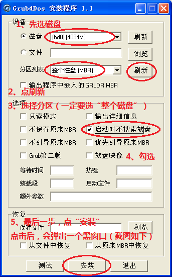 选“分区”的时候要记得选“整个磁盘 (MBR)”
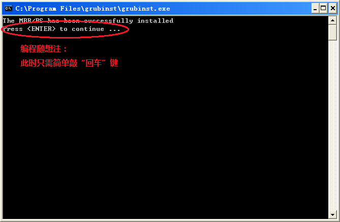
接着在 grub4dos 压缩包里面找一个名叫
完成上述步骤，grub4dos 就替代了原有硬盘的 MBR（主引导扇区）。
俺准备了一个现成的 grub4dos 配置文件，这个文件的文件名必须是
一般情况下，你需要稍微修改一下
grub4dos 的配置文件采用如下方式表示硬盘分区：
(hdX,Y) 表示：第X个物理硬盘的第Y个分区（X 和 Y 是以0开头的整数）。
X=0 表示第一个硬盘，X=1 表示第二个硬盘，以此类推。
Y的含义稍复杂，列表如下：
如果你喜欢折腾装机，或许你自己已经有一个现成的 DOS 镜像。如果没有的话，自己去网上搜一个。
把你找来的 DOS 镜像放到“安装文件分区”的【根目录】下，文件名改成
经过前面几个步骤，grub4dos 应该准备妥当了。你最好先测试一下 grub4dos 是否能正常工作。
只需重启系统。如果硬件自检完之后，出现如下启动菜单，就说明 grub4dos 已经 OK 了。
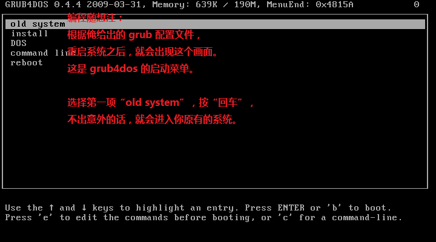
然后你找来要安装的系统盘（强调一下：必须是“微软官方镜像”）。只要是 Win2000/XP/2003 的官方镜像，ISO 里面会有一个名叫“i386”的目录。你把这个目录从 ISO 里面解压缩到“安装文件分区”。
说到这里，顺便抹黑一下山寨的安装盘。在咱们天朝有不少山寨的安装盘，里面可谓是鱼龙混杂。某些低档的安装盘，充斥着流氓软件甚至木马。所以，（要装 Windows 的话）俺一贯推荐用微软原版的镜像，以确保系统的“纯洁”。
重启系统，在 grub4dos 的启动菜单中选 DOS 这个选项（截图如下）。
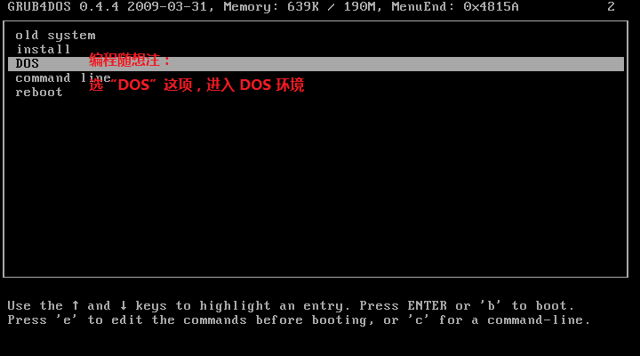
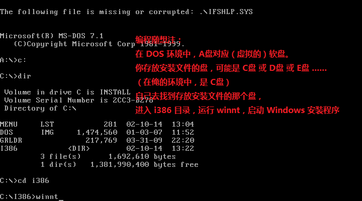
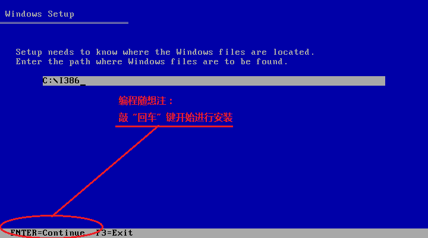
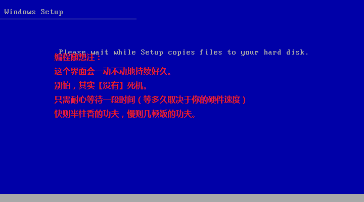
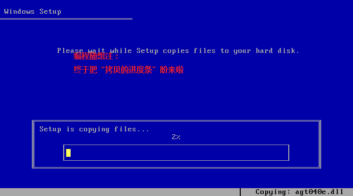
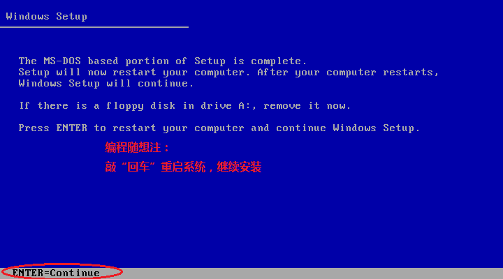
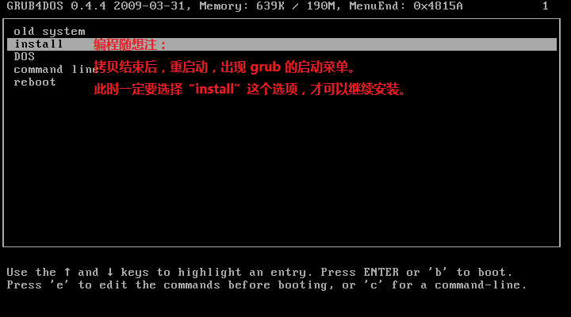
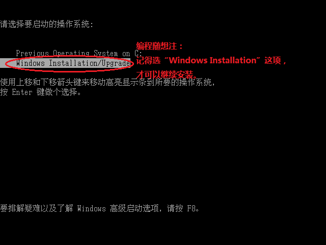
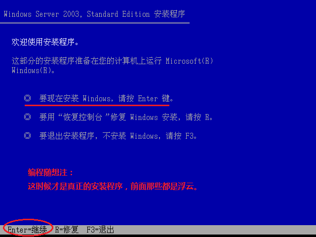
后面的操作就跟光盘安装一样了，俺就不贴图了。
利用“NT6 HDD Installer”这个小工具添加启动项，同时这个小工具还会完成相应的配套设置。重启动之后直接可以全新安装 NT6 系列。
首先，直接解压缩 ISO 然后运行
对于 NT6 系列的硬盘安装，还有一个很流行的方法：先把 ISO 解压缩到某个分区的【根目录】，然后运行
这个方法虽然很简单，但有个缺点——【无法】跨 32位/64位。比如说：当前系统是 32位，而你想安装 64位 的 Win7或Win8。对于 64位 的Win7/Win8，ISO 镜像里面的
首先，你要准备一个硬盘分区，用来存放 Windows 的安装文件。这个硬盘分区必须具有足够大的“空闲空间”。然后把安装光盘的内容解压缩到这个分区的【根目录】下。
为了叙述方面，下面俺称这个分区为“安装文件分区”。
这个小工具的官网也就是作者自己的 SkyDrive 网盘（链接在“这里”）。找到最新的版本并下载（截至俺写本文的时候，版本是 3.1.4）。
这个小工具是绿色的，无需安装。RAR 压缩包里面只有一个 exe，把它解压缩到随便哪个目录。然后以管理员权限运行它，一键设置（截图如下）。
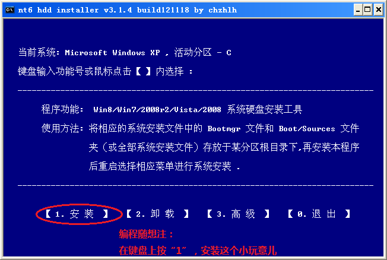
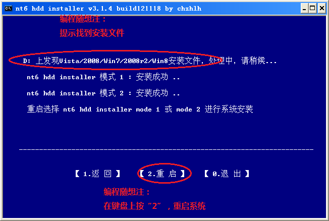
一键设置完成后，它会自动找到你存放安装文件的那个分区（挺智能），然后它会在你的系统中添加两个新的启动项（分别是“mode 1”和“mode 2”）。这两者的区别不大：“mode 1”使用 grub4dos 方式进行引导（也就是前面提到的 grub4dos），“mode 2”使用微软自己的引导方式。
然后重启动，默认选“mode 1”。如果你的机器比较古怪，导致“mode 1”无法启动，就换另一个 mode 试试看。
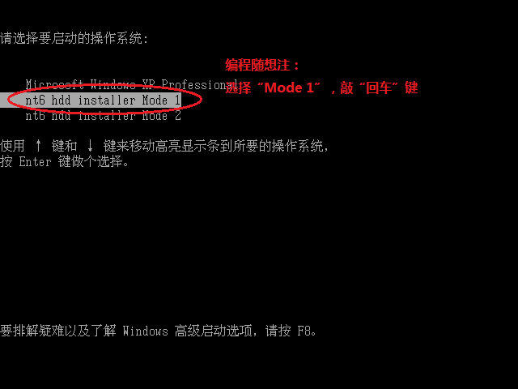
接下来，你就会看到熟悉的 Windows 安装界面。看到这个界面，基本上就成功了一半。
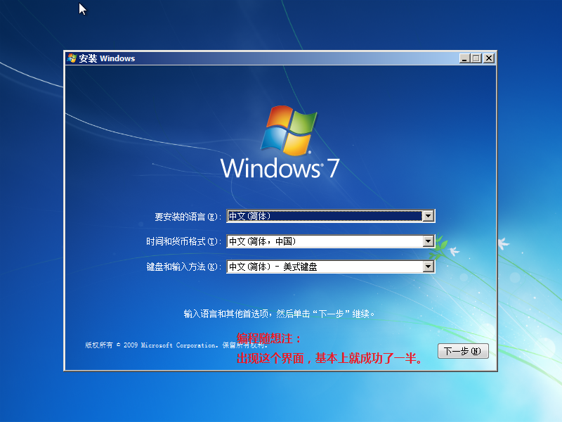
到了这个界面，要小心喽。
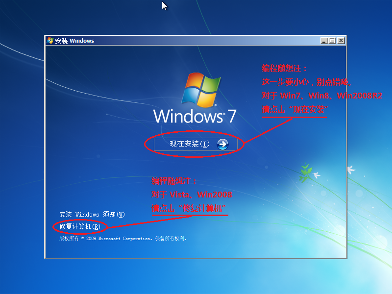
对于“Win7/Win2008R2/Win8”
请点击“现在安装”。后续的步骤就跟传统安装方式一模一样了（俺也可以省点力气，不用贴图啦）
对于“Vista/Win2008”
请点击左下方的“修复计算机”。然后会出现一个“系统恢复选项”的界面，在该界面上点“命令行提示符”，出现一个黑色的命令行窗口。然后你在这个命令行窗口中运行“安装文件分区”中的
本文介绍的两个方法（分别对应 NT5 和 NT6），是俺这几天尝试了各种硬盘安装方式之后，挑选出来的。如果你有其它方法，欢迎到俺博客分享。如果有说得不对的、不严密的地方，欢迎大伙儿批评指正。
俺博客上，和本文相关的帖子（需翻墙）：
《如何用 ISO 镜像制作U盘安装盘（通用方法、无需 WinPE）》
★本文适用的硬件环境
首先说一下本文适用的环境——符合如下两个条件之一，可以考虑用本文介绍的方法。
1、电脑【没】光驱，并且主板【不】支持“USB启动”
2、手头“三无”——【没】物理光盘，【没】U盘，【没】外置移动硬盘
★全新安装 VS 升级安装
本文介绍的方法，强调是【全新安装】。所谓的“全新安装”有别于“升级安装”。“升级安装”有如下缺点：
1. 有些系统无法进行升级安装（比如无法从 XP 升级到 2003）
2. 无法进行“降级”（比如原有系统是 Win7，无法降为 WinXP）
3. 使用“升级安装”得到的系统不够“纯洁”（比如原有系统中的病毒或流氓软件会继续遗留在新系统中）
综上所述，俺通常不建议用“升级安装”。所以，今天不讨论“升级安全”的话题。
★“全新安装”的两种模式
◇概述
用【内置硬盘】进行“全新安装”，可以有两种模式：
“直接运行”模式
直接把新系统的安装盘解压缩到本地硬盘的某个目录，然后直接运行其中的 setup.exe 开启安装过程。
“重启动”模式
先用某种方式设置当前系统的启动项，然后通过“重启动”进入安装环境。
◇优缺点对比
“直接运行”模式具有如下缺点：
缺点1：无法降级
在“直接运行”的模式下，如果你要安装的【新】系统，版本号比现有系统更小，安装程序会拒绝安装。
缺点2：无法跨“32位/64位”
在“直接运行”的模式下，如果现有的系统是32位，就无法直接运行64位系统的 setup.exe。
◇小结
因为存在上述缺点，所以本文只介绍第二种模式——“重启动模式”。
★当前主流 Windows 的两个系列——扫盲 NT 版本号
在进入正题之前，俺先卖弄一个技术常识——关于 NT 的版本号。
如今主流的 Windows，不管其产品名如何变幻，其内核都是 Windows NT。NT 是洋文“新技术”的缩写，以区别于更落后的 Win95/Win98/WinME（90后的同学估计没接触过这些老系统）。
NT 的发展大致经历了4代，具体如下：
---------------- Windows NT 3.1 版本号 3.1（为啥第一代不是 1.0？因为要跟当时 DOS 上运行的 Windows 3.1 保持版本号一致） Windows NT 3.5 版本号 3.5 Windows NT 3.51 版本号 3.51 ---------------- Windows NT 4.0 版本号 4.0 ---------------- Windows 2000 版本号 5.0 Windows XP 版本号 5.1 Windows Server 2003 版本号 5.2 ---------------- Windows Vista 版本号 6.0 Windows Server 2008 版本号 6.0 Windows 7 版本号 6.1 Windows Server 2008 R2 版本号 6.1 Windows 8 版本号 6.2 ----------------NT3 和 NT4，如今基本不用了；从 Win2K 一直到 Win2K3，都称为“NT5”；从 Vista 开始一直到 Win8.1，称为“NT6”。NT5/NT6 两个系列，差异是很大滴。这两天，俺企图找到某种“通杀”的硬盘安装方法——能同时搞定 NT5 和 NT6——可惜没能如愿 :( 所以捏，只好勉为其难，分别介绍两种“半通用”的方法，分别针对 NT5 和 NT6。这两种方法的操作完全不同。
★针对 Windows 2000/XP/2003 的方法
如果你不需要安装 2000/XP/2003，请直接跳过本章节，直接到下一章节（以免浪费时间）。
◇原理说明
先依靠【grub4dos】这个开源的小工具，在当前系统中加出新的启动项，然后再配合 DOS 镜像，就可以启动出一个 DOS 环境。所有 NT5 系列的 Windows 都支持在 DOS 下运行安装程序。如此一来，就可以用本地硬盘进行“全新安装”。
◇和其它方法的对比
对比“直接运行模式”
直接解压缩 ISO 然后运行 setup 的方式（也就是刚才提到的“直接运行模式”）存在若干缺点，前面已经分析了。
对比“用 grub 直接启动 ISO”
还有一种类似的安装方法，也是用 grub4dos 来添加启动项，然后让 grub4dos 直接启动 ISO 镜像。这种方法的缺点是：
缺点1：兼容性不够好
比方说：假如 ISO 文件在硬盘上【没有】连续存放，grub4dos 直接启动这个 ISO 会失败。虽然 grub4dos 有一个
--mem 的参数可以把 ISO 镜像载入内存再启动（以此来解决“连续存放”的问题），但对于小内存的电脑，这招显然不合适。缺点2：灵活性不够好
因为 Windows 安装程序自带的硬盘分区功能比如弱。而如果用 grub4dos 先启动出 DOS 环境，就可以用 DOS 下专用的分区工具（比如 PQmagic）调整分区布局/分区格式。
对比“用 grub 直接启动 ntldr”
这种方式比“grub 直接启动 ISO”的兼容性好一些。但依然存在“灵活性不足”的缺点。
◇步骤1：准备一个硬盘分区
首先，你要准备一个硬盘分区，用来存放 Windows 的安装文件。该分区必须使用 FAT16 或 FAT32 文件系统。这个硬盘分区必须具有足够大的“空闲空间”。需要多大的“剩余空间”，主要看你要新装的是哪种 Windows。
为了叙述方面，下面俺称这个分区为“安装文件分区”。
◇步骤2：安装 grub4dos
先到它的官网下载 grub4dos 的软件包，文件名是
grub4dos-0.4.4.zip（下载页面在“这里”），接着下载 grubinst 软件包，文件名是 grubinst-1.1-bin-w32-2008-01-01.zip（下载页面在“这里”）把下载好的 grubinst 解压到某个目录，运行其中的 grubinst_gui.exe，参照如下截图进行设置。
接着在 grub4dos 压缩包里面找一个名叫
grldr 的文件，把这个文件放到前面提到的那个“安装文件分区”的【根目录】下。完成上述步骤，grub4dos 就替代了原有硬盘的 MBR（主引导扇区）。
◇步骤2：配置 grub4dos
俺准备了一个现成的 grub4dos 配置文件，这个文件的文件名必须是
menu.lst，它也跟 grldr 一样，必须放在“安装文件分区”的【根目录】下。menu.lst 的内容如下：timeout 10 default 0 title old system chainloader (hd0,0)+1 title install chainloader (hd0,1)+1 title DOS find --set-root /dos.img map --mem /dos.img (fd0) map --hook chainloader (fd0)+1 rootnoverify (fd0) title command line commandline title reboot reboot
title old system 那一段对应你原有的系统，title install 那一段对应“安装文件分区”，title DOS 那一段对应 DOS镜像（等一下会说）。一般情况下，你需要稍微修改一下
menu.lst 配置文件（因为你的硬盘分区跟俺的硬盘分区，可能有差异）。【可能】修改的地方有两处，俺分别标注了红色。grub4dos 的配置文件采用如下方式表示硬盘分区：
(hdX,Y) 表示：第X个物理硬盘的第Y个分区（X 和 Y 是以0开头的整数）。
X=0 表示第一个硬盘，X=1 表示第二个硬盘，以此类推。
Y的含义稍复杂，列表如下：
0 第1个主分区稍微解释一下：对于传统的 MBR 分区布局，最多只能有4个“主分区”。为了让分区数超过4个，特地增加了“扩展分区”的功能，一个硬盘只能有一个扩展分区，扩展分区内部可以分“任意多个”逻辑分区。
1 第2个主分区
2 第3个主分区
3 第4个主分区
4 第1个逻辑分区
5 第2个逻辑分区
（以此类推）
◇步骤3：准备一个 DOS 镜像
如果你喜欢折腾装机，或许你自己已经有一个现成的 DOS 镜像。如果没有的话，自己去网上搜一个。
把你找来的 DOS 镜像放到“安装文件分区”的【根目录】下，文件名改成
dos.img◇步骤4：测试一下 grub4dos
经过前面几个步骤，grub4dos 应该准备妥当了。你最好先测试一下 grub4dos 是否能正常工作。
只需重启系统。如果硬件自检完之后，出现如下启动菜单，就说明 grub4dos 已经 OK 了。
◇步骤5：准备安装文件
然后你找来要安装的系统盘（强调一下：必须是“微软官方镜像”）。只要是 Win2000/XP/2003 的官方镜像，ISO 里面会有一个名叫“i386”的目录。你把这个目录从 ISO 里面解压缩到“安装文件分区”。
说到这里，顺便抹黑一下山寨的安装盘。在咱们天朝有不少山寨的安装盘，里面可谓是鱼龙混杂。某些低档的安装盘，充斥着流氓软件甚至木马。所以，（要装 Windows 的话）俺一贯推荐用微软原版的镜像，以确保系统的“纯洁”。
◇步骤6：启动到 DOS
重启系统，在 grub4dos 的启动菜单中选 DOS 这个选项（截图如下）。
◇步骤7：运行安装程序
后面的操作就跟光盘安装一样了，俺就不贴图了。
★针对 Windows Vista/2008/7/2008R2/8 的方法
◇原理说明
利用“NT6 HDD Installer”这个小工具添加启动项，同时这个小工具还会完成相应的配套设置。重启动之后直接可以全新安装 NT6 系列。
◇和其它方法的对比
首先，直接解压缩 ISO 然后运行
setup 的方式（也就是刚才提到的“直接运行模式”）存在若干缺点，前面已经分析了。对于 NT6 系列的硬盘安装，还有一个很流行的方法：先把 ISO 解压缩到某个分区的【根目录】，然后运行
/boot/bootsect.exe 进行设置，再把该分区设置为“活动”状态。然后就可以通过重启动的方式，启动该分区的安装程序。这个方法虽然很简单，但有个缺点——【无法】跨 32位/64位。比如说：当前系统是 32位，而你想安装 64位 的 Win7或Win8。对于 64位 的Win7/Win8，ISO 镜像里面的
/boot/bootsect.exe 也是64位，无法在 32位 的系统中运行。◇步骤1：准备一个硬盘分区
首先，你要准备一个硬盘分区，用来存放 Windows 的安装文件。这个硬盘分区必须具有足够大的“空闲空间”。然后把安装光盘的内容解压缩到这个分区的【根目录】下。
为了叙述方面，下面俺称这个分区为“安装文件分区”。
◇步骤2：下载/运行 NT6 HDD Installer
这个小工具的官网也就是作者自己的 SkyDrive 网盘（链接在“这里”）。找到最新的版本并下载（截至俺写本文的时候，版本是 3.1.4）。
这个小工具是绿色的，无需安装。RAR 压缩包里面只有一个 exe，把它解压缩到随便哪个目录。然后以管理员权限运行它，一键设置（截图如下）。
一键设置完成后，它会自动找到你存放安装文件的那个分区（挺智能），然后它会在你的系统中添加两个新的启动项（分别是“mode 1”和“mode 2”）。这两者的区别不大：“mode 1”使用 grub4dos 方式进行引导（也就是前面提到的 grub4dos），“mode 2”使用微软自己的引导方式。
◇步骤3：重启动
然后重启动，默认选“mode 1”。如果你的机器比较古怪，导致“mode 1”无法启动，就换另一个 mode 试试看。
接下来，你就会看到熟悉的 Windows 安装界面。看到这个界面，基本上就成功了一半。
◇步骤4：两种版本的操作差异
到了这个界面，要小心喽。
对于“Win7/Win2008R2/Win8”
请点击“现在安装”。后续的步骤就跟传统安装方式一模一样了（俺也可以省点力气，不用贴图啦）
对于“Vista/Win2008”
请点击左下方的“修复计算机”。然后会出现一个“系统恢复选项”的界面，在该界面上点“命令行提示符”，出现一个黑色的命令行窗口。然后你在这个命令行窗口中运行“安装文件分区”中的
setup.exe★结尾
本文介绍的两个方法（分别对应 NT5 和 NT6），是俺这几天尝试了各种硬盘安装方式之后，挑选出来的。如果你有其它方法，欢迎到俺博客分享。如果有说得不对的、不严密的地方，欢迎大伙儿批评指正。
俺博客上，和本文相关的帖子（需翻墙）：
《如何用 ISO 镜像制作U盘安装盘（通用方法、无需 WinPE）》
版权声明
本博客所有的原创文章，作者皆保留版权。转载必须包含本声明，保持本文完整，并以超链接形式注明作者编程随想和本文原始地址：
https://program-think.blogspot.com/2014/02/hdd-install-windows.html
本博客所有的原创文章，作者皆保留版权。转载必须包含本声明，保持本文完整，并以超链接形式注明作者编程随想和本文原始地址：
https://program-think.blogspot.com/2014/02/hdd-install-windows.html